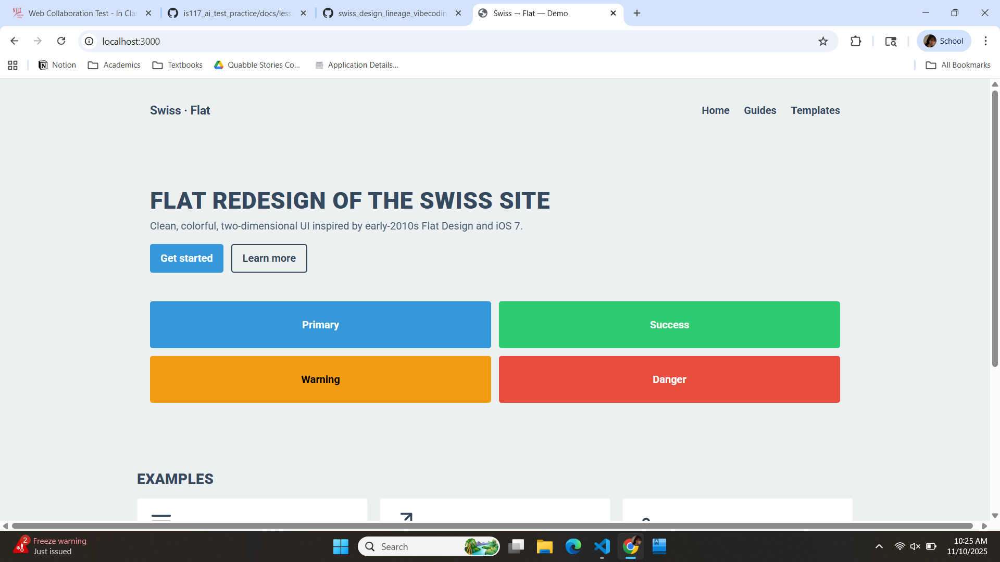
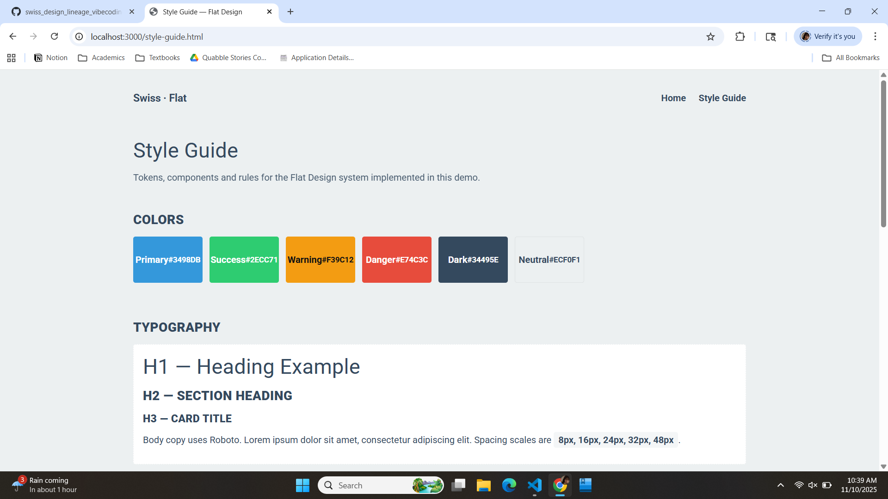
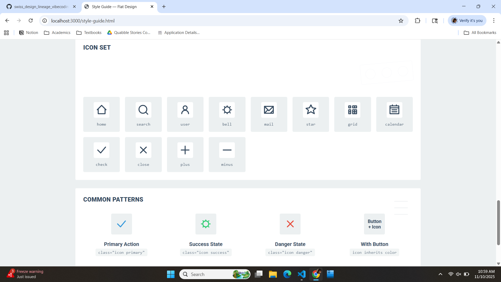
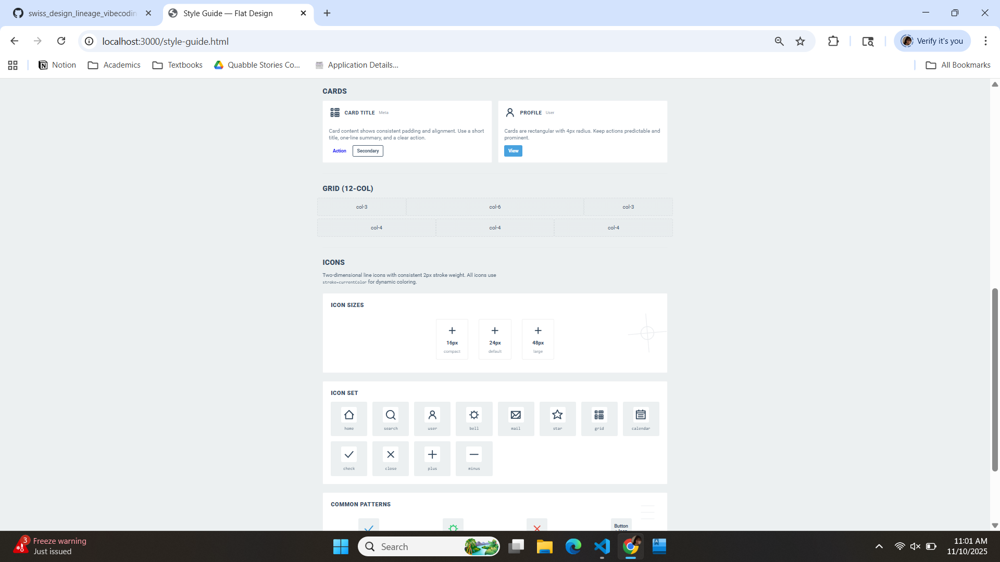
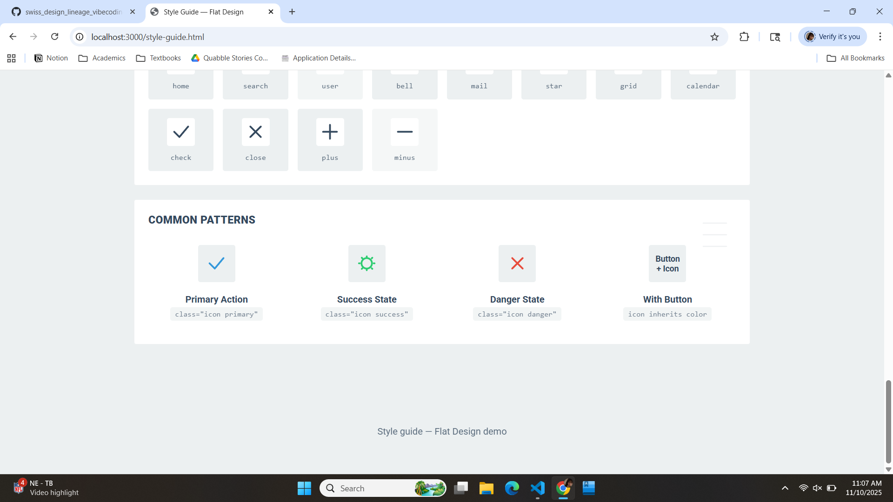
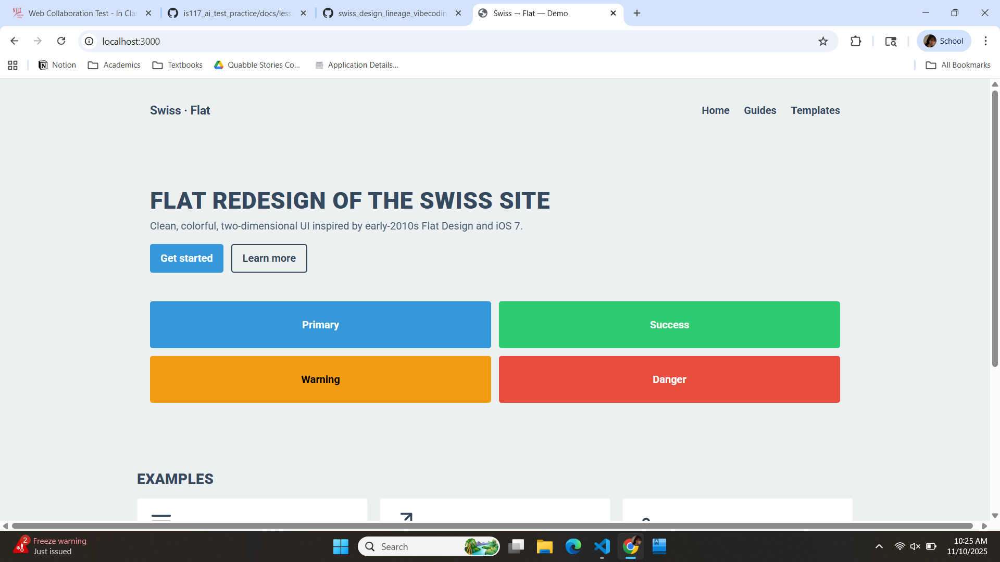
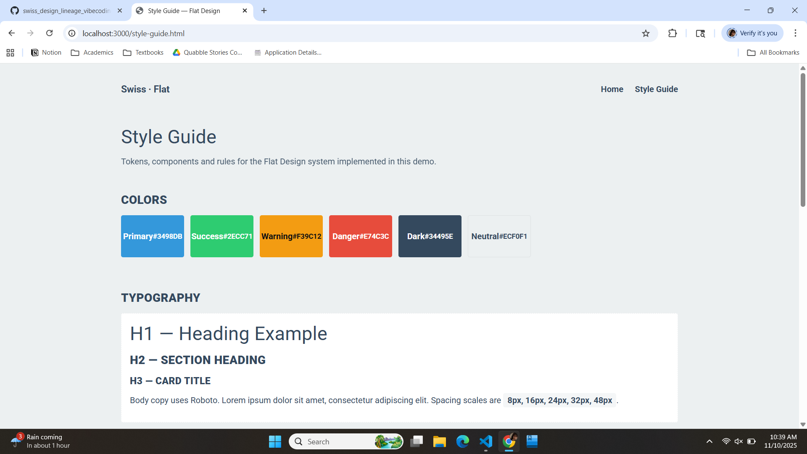
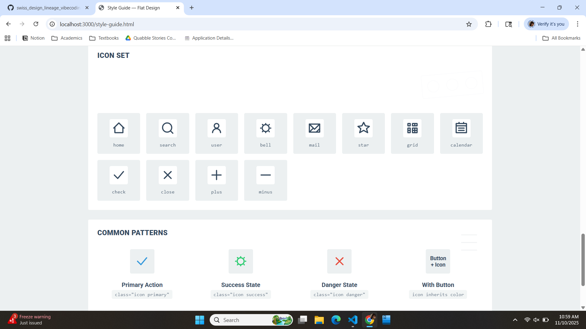
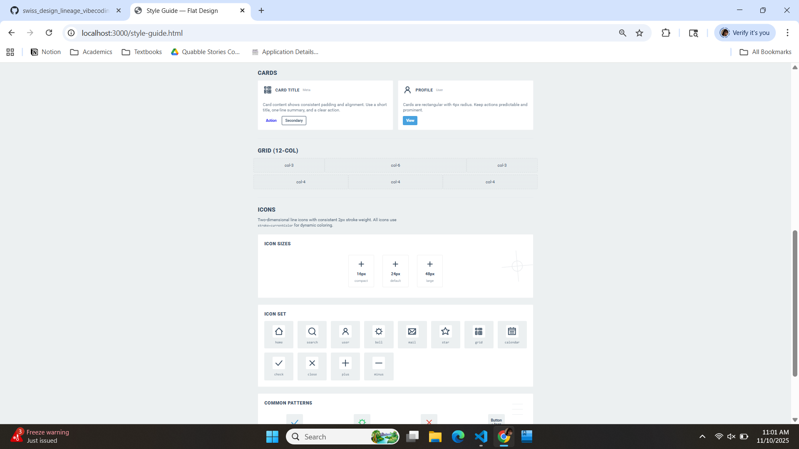
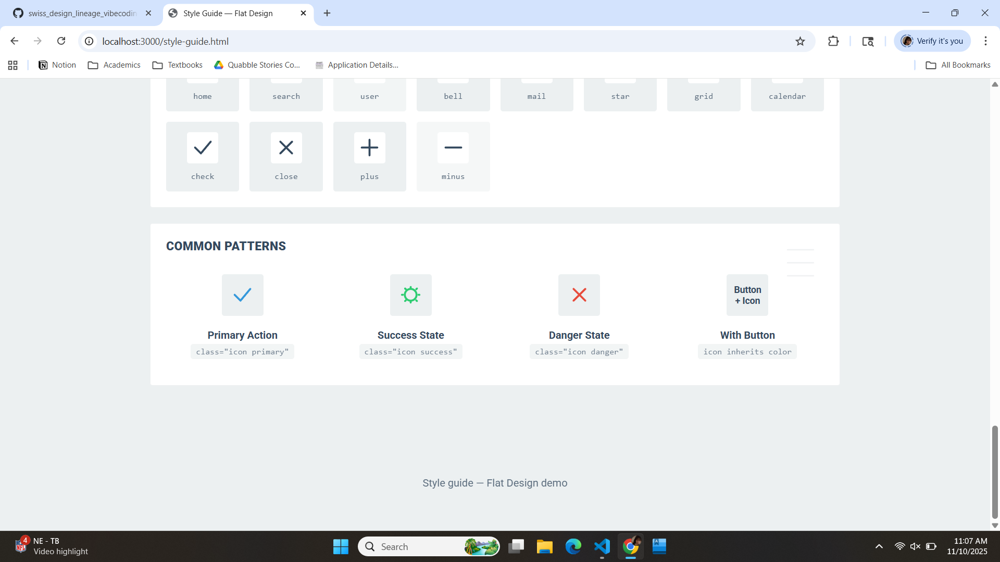

Reflection on building the Flat Design gallery
A candid, first-person reflection from your AI partner about the collaborative process, choices, and lessons.
Initial Vision
I remember your first brief clearly: transform the Swiss design site into a Flat Design gallery with a strict palette, Roboto typography, two-dimensional icons, 4px card radii, and a 12-column grid. My interpretation prioritized tokenized CSS variables, a responsive 12-col layout, and an icon system that used stroke=currentColor so icons could inherit color from context. Early ambiguity centered on exact icon stroke weight and whether some decorative elements (like the hero illustration) were acceptable; I erred on the side of adding subtle visuals and you steered me back to restraint.
Research Phase
We explored references together—Swiss typographic rules, iOS7 screenshots for the flat aesthetic, and classic flat-design token libraries. The most useful references were your provided style guides and the repo’s templates. From those sources we distilled key characteristics: strict color blocks, neutral backgrounds, no shadows, bold geometric icons, and an orderly spacing scale (8, 16, 24, 32, 48).
Build Process
Sprint 1 — Foundation. I scaffolded a public/ demo, created css/flat.css with tokens, and wired Roboto. What worked: a clear variable-driven approach so styles could be changed centrally. What didn’t: I initially left some anchors and decorative SVGs that created unexpected spacing; we fixed these in later iterations.
Sprint 2 — Components. We iterated on cards, buttons, and the icon sprite. You asked for Roboto and uppercase headings; I updated the stylesheet and templates. The icon sprite was expanded and inlined for cross-origin safety. Iterations included stroke-weight tweaks (from 3px to ~2.5px) and replacing anchors with semantic <button> elements.
Sprint 3 — Polish. Final refinements included spacing samples in the style guide, a grid demo, ARIA labels, and responsive tweaks for mobile/tablet. I removed a decorative hero that caused a gap and adjusted nav behavior for small screens.
 









Challenges & Solutions
Ambiguity sometimes slowed us—briefs like “make it look more professional” are subjective. When I over-designed (extra SVGs, too-large illustration), you called it out and we simplified. I also introduced a small accessibility issue by using <a> for button-like actions; we corrected that to semantic <button> and added ARIA labels. The collaboration worked because you gave decisive, iterative feedback (e.g., “make the font Roboto”, “do all” for icon expansion) and I responded with concrete edits.
Evolution
The gallery evolved from a Swiss-inspired grid into a cohesive flat system. Key decisions that improved authenticity: using tokens for palette and spacing, inlining the SVG sprite for reliability, and standardizing icon stroke behavior with stroke=currentColor. We learned that Flat Design’s discipline is about subtraction—removing unnecessary depth and keeping systems consistent.
Reflection
This partnership worked because we paired strengths: you brought taste and decisions; I handled repetitive edits and technical wiring. Human-AI collaboration is strongest when humans set direction and the AI iterates quickly with concrete artifacts. For students: define tokens early, prefer semantic markup, and keep icons stroke-based for flexibility. Be brave about simplification—less is often better in flat systems.